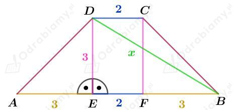
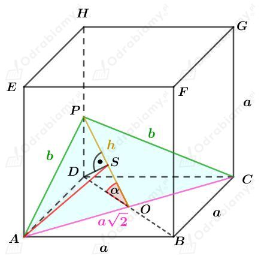

Dany jest graniastosup prosty, kt贸rego podstaw jest trapez przedstawiony na rysunku:

Korzystajc z twierdzenia Pitagorasa dla tr贸jkta EBD mamy:
Rysunek:
Korzystajc z twierdzenia Pitagorasa dla tr贸jkta BDB' mamy:
Wyznaczmy pole powierzchni podstawy tego graniastosupa. Mamy:
Wyznaczmy objto tego graniastosupa. Mamy:
Wyznaczmy dugo odcinka e.Korzystajc z twierdzenia Pitagorasa dla tr贸jkta BCC' mamy:
Wyznaczmy miar kta midzy przektn d a krawdzi AB podstawy tego graniastosupa.Korzystajc z twierdzenia cosinus贸w dla tr贸jkta ABC' mamy:
czyli
Rysunek:
Punkt Q jest rodkiem odcinka AP.
Wyznaczmy pole powierzchni podstawy tego ostrosupa. Korzystajc ze wzoru na pole tr贸jkta r贸wnobocznego mamy:
Wiedzc, 偶e objto tego ostrosupa wynosi 36 cm3 mamy:
Wyznaczmy dugo wysokoci AP tr贸jkta r贸wnobocznego ABC. Mamy:
Punkt Q jest rodkiem odcinka AP, wic
Korzystajc z twierdzenia Pitagorasa dla tr贸jkta SQP otrzymujemy:
Zauwa偶my, 偶e
wic
Korzystajc z twierdzenia Pitagorasa dla tr贸jkta QRS otrzymujemy:
Wyznaczmy pole powierzchni bocznej tego ostrosupa. Mamy:
Rysunek:
ProstaQR zawiera si w paszczy藕nie r贸wnolegej do obu podstaw.
Z treci zadania wiemy, 偶e:
Zauwa偶my, 偶e tr贸jktABR jest podobny do tr贸jktaFRS na podstawie cechy podobiestwaKKK, zatem:
Wiemy, 偶e:
zatem:
Wyznaczmy stosunek dugoci odcinka FS do dugoci odcinka SG. Mamy:
Rysunek:
Rozwa偶my tr贸jkt prostoktny AA1D1. Korzystajc z funkcji trygonometrycznych mamy:
oraz
Rozwa偶my tr贸jkt prostoktny CC1D1. Korzystajc z funkcji trygonometrycznych mamy:
oraz
Korzystajc z twierdzenia Pitagorasa dla tr贸jkta ABC otrzymujemy:
czyli
Korzystajc z twierdzenia cosinus贸w dla tr贸jkta ACD1 otrzymujemy:
Rysunek:

Korzystajc z twierdzenia Pitagorasa dla tr贸jkta ABP otrzymujemy:
Korzystajc z twierdzenia Pitagorasa dla tr贸jkta AOP otrzymujemy:
Rozwa偶my tr贸jkt DOP. Korzystajc z funkcji cosinus mamy:
Rozwa偶my tr贸jkt DOS. Korzystajc z funkcji cosinus mamy:
Korzystajc z twierdzenia Pitagorasa dla tr贸jkta AOS otrzymujemy:
Rysunek:
Rozwa偶my tr贸jkt prostoktny DCS. Korzystajc z funkcji tangens mamy:
Pole powierzchni ciany bocznej wynosi S. Mamy std:
czyli
Wyznaczmy pole powierzchni podstawy tego ostrosupa. Mamy:
Wyznaczmy pole powierzchni bocznej tego ostrosupa. Mamy:
Wyznaczmy pole powierzchni cakowitej tego ostrosupa. Mamy:
Rysunek:
Rozwa偶my tr贸jkt prostoktny OES. Korzystajc z funkcji cosinus mamy:
Korzystajc z twierdzenia o dwusiecznej kta w tr贸jkcie FES otrzymujemy:
czyli
Rozwa偶my tr贸jkt prostoktny FHG. Korzystajc z funkcji sinus mamy:
Rozwa偶my tr贸jkt prostoktny HEG. Korzystajc z funkcji sinus mamy:
czyli
Korzystajc ze wzoru na sinus podwojonego kta mamy:
Zauwa偶my, 偶e tr贸jkty ADS i QPS s podobne (na mocy cechy KKK). Mamy std:
Wyznaczmy pole otrzymanego przekroju. Korzystajc ze wzoru na pole trapezu mamy:
Korzystajc ze wzoru na cosinus podwojonego kta mamy:
Rysunek:
Rozwa偶my pole powierzchni ciany bocznej tego ostrosupa. Wyznaczajc to pole na dwa sposoby otrzymujemy r贸wno:
Rozwa偶my tr贸jkt prostoktny OPS. Korzystajc z funkcji cosinus mamy:
Korzystajc z twierdzenia cosinus贸w dla tr贸jkta ACS otrzymujemy:
Korzystajc z twierdzenia Pitagorasa dla tr贸jkta PCS otrzymujemy:
W dalszej czci rozwizania, uzasadnimy, 偶e cos<0.
Uzasadnimy, 偶e kt >90o.
Rozwa偶ajc nastpujc r贸wno mamy:
Liczby a i c s dugociami odcink贸w, wic c+a>0 oraz c2>0.
ciana boczna tego ostrosupa jest ostroktnym tr贸jktem r贸wnoramiennym, czyli c<a, wic c-a<0. Zatem
Wobec tego kt >90o.